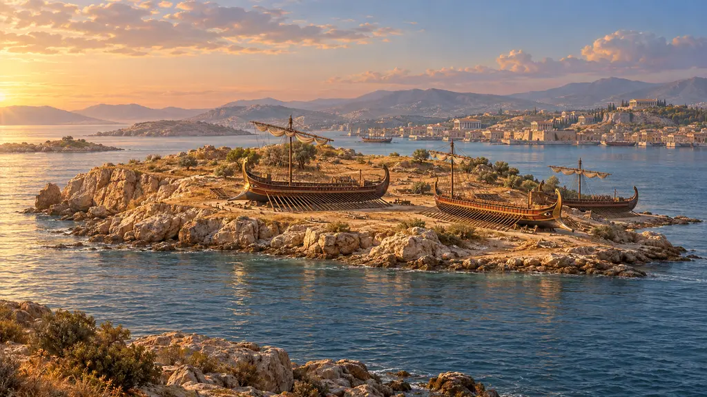
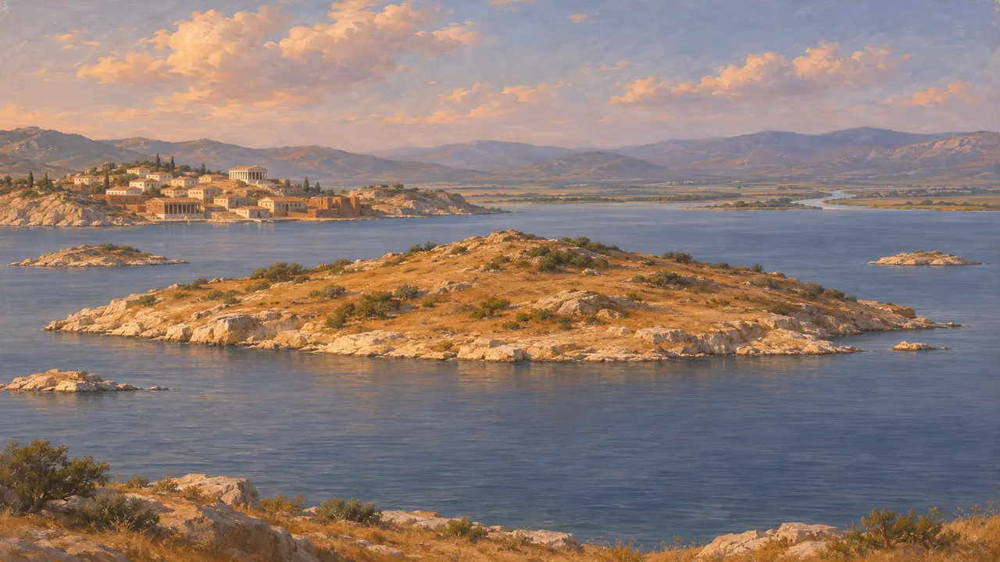
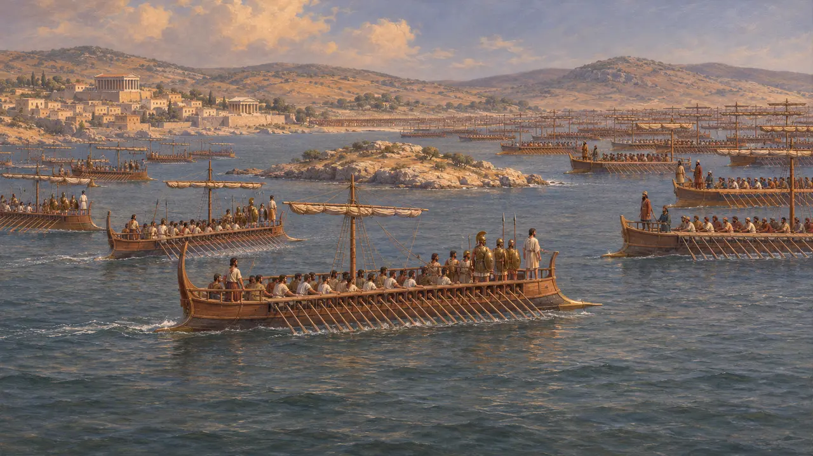
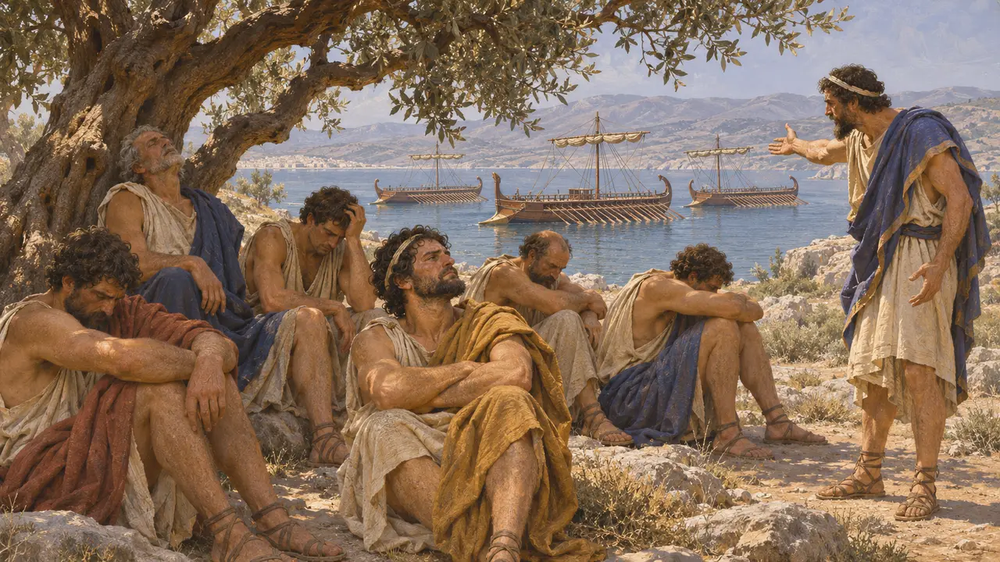
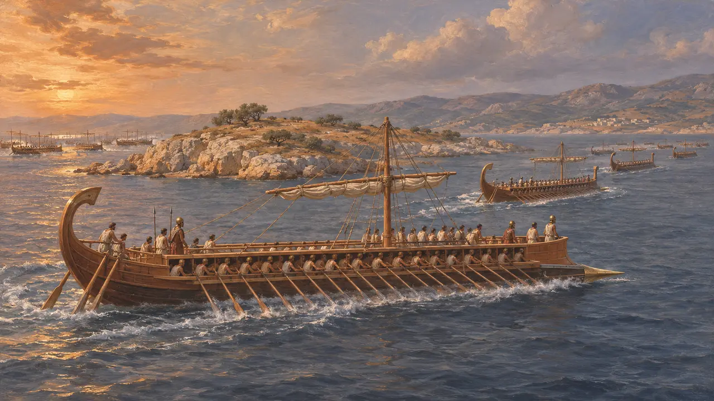
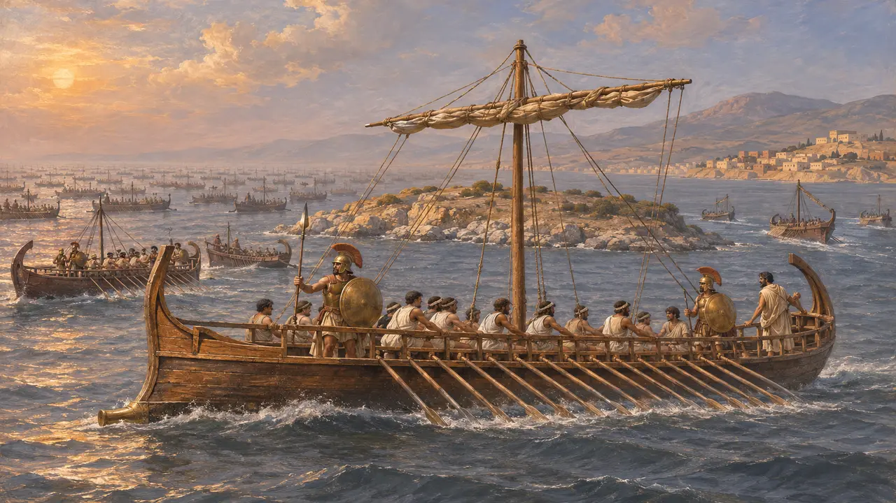

Lade
Island off Miletus and site of the sea battle that ended the Ionian Revolt, 494 BCE
In the game: Level 7: Sardis Burns
Lade was a small island in front of the harbours of Miletus. In about 494 BCE the King's fleet, drawn mostly from Phoenicia, Cyprus, Cilicia and Egypt, defeated the combined ships of the rebel Ionian cities there. The defeat left Miletus open to siege and capture, and it effectively ended the Ionian Revolt that Aristagoras had begun.
In the game: The Chronicle names Lade as the place where the King's fleet of 600 BCE beat the Ionians' 353 triremes in 494 BCE after the Samians sailed away. These are Herodotus's figures, and the 600 BCE is probably inflated.

An island in the Gulf of Latmos
Ancient accountIn antiquity Lade lay just off Miletus, near the mouth of the gulf into which the Maeander river flowed. Strabo names it as an island close to the city, with smaller islets around it. Silt carried by the Maeander has since filled the gulf, and the former island survives today as a low hill in farmland, several kilometres from the sea.
Strabo 14.1.7

Two fleets off Miletus
Ancient accountHerodotus says the Persian commanders brought their land army against Miletus and gathered a fleet in which the Phoenicians were the keenest. The Ionians chose to fight at sea and drew up at Lade with 353 triremes. The Chians had the largest contingent with 100, Miletus sent 80 and Samos 60. He gives the King's fleet as 600 ships.
Herodotus 6.6-9

Dionysius and the drills
Ancient accountHerodotus tells that Dionysius of Phocaea, who brought only three ships, took charge of training and kept the crews rowing and practising manoeuvres in the summer heat. After seven days the men, unused to such labour, refused to go on and sat in the shade on the island. Herodotus presents this as the first sign that the alliance would not hold.
Herodotus 6.11-12

The Samians sail away
Ancient accountAccording to Herodotus, the Persians sent the exiled tyrants of the Ionian cities to win over their own people. Aeaces, son of Syloson, persuaded most of the Samian captains, and when battle began 49 of the 60 Samian ships left, followed by most of the Lesbians. The Chians fought on and lost heavily. Dionysius took three enemy ships, sailed to Phoenicia to raid merchant ships, and later turned pirate off Sicily.
Herodotus 6.9-17

Numbers, blame and date
DisputedHistorians generally treat the 600 Persian ships as a round, probably exaggerated figure. Herodotus admits that the Ionians blamed each other and that he could not say for certain who fought well, so his story leans on Samian excuses and Chian praise. No Persian document records the battle. The usual date of 494 BCE rests on his statement that Miletus fell in the sixth year of the revolt.
O. Murray, 'The Ionian Revolt', Cambridge Ancient History IV, 1988
Sources
- Herodotus 6.6-22
- Strabo 14.1.7
- O. Murray, 'The Ionian Revolt', Cambridge Ancient History IV, 1988
- P. Briant, From Cyrus to Alexander, 2002
- H. T. Wallinga, Ships and Sea-Power before the Great Persian War, 1993